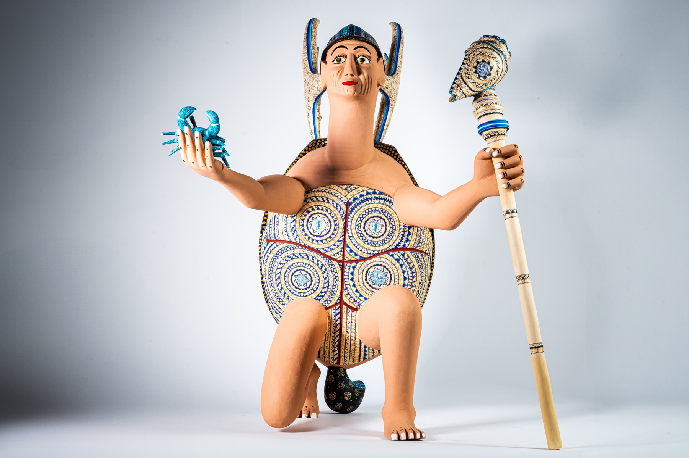

Tallador de Sueños
Un estudio artístico mexicano contemporáneo.
La marca nace de una pregunta sencilla: qué forma tendría un sueño si pudiera habitar la madera. Desde ahí, cada obra se convierte en un diálogo entre oficio, imaginación y coleccionismo actual.

Tallador de Sueños trabaja con piezas de edición limitada y figuras personalizadas, talladas y pintadas a mano por artistas que entienden la madera como una materia viva. Ninguna figura se repite de forma exacta: cada veta modifica la postura, el ritmo y la energía final.
La estética del estudio toma referencias del arte tradicional mexicano, de la arquitectura emocional de los museos y de la precisión visual de una marca de lujo. El resultado son objetos con presencia: esculturas que no decoran solamente, sino que cuentan una historia.
Cada entrega se prepara como una obra de colección, con embalaje cuidado, ficha de pieza y acompañamiento para envíos nacionales e internacionales. Para encargos privados, el estudio desarrolla una propuesta visual antes de iniciar el tallado.
Explorar piezas